การเริ่มต้นใช้งานบอร์ด LUATOS CORE-ESP32C3#
▷ AirM2M / LUATOS CORE-ESP32C3#
บอร์ด LUATOS CORE-ESP32C3 เป็นอีกหนึ่งบอร์ดไมโครคอนโทรลเลอร์ของบริษัท Hezhou Communication Technology Co., Ltd. (Shanghai, China) บอร์ดนี้มีราคาถูกและใช้ชิป Espressif ESP32-C3 รองรับการสื่อสารข้อมูลแบบไร้สายตามมาตรฐาน IEEE 802.11b/g/n (2.4 GHz WiFi) & Bluetooth 5 (LE)
ภายในชิปมีตัวประมวลผลที่ทำงานตามสถาปัตยกรรมชุดคำสั่งแบบ RISC-V (32-bit Single-Core RV32IMC, I=integer, M=multiplication/division C=standard compressed instruction set extension)
บอร์ดที่ได้นำมาทดลองใช้งาน มี 2 รุ่น และมีความแตกต่างกันดังนี้
- Classic version (Schematic): มีชิป USB-to-Serial Bridge IC (WCH CH340) อยู่บนบอร์ด
- Contracted version (Schematic): ไม่มีชิป WCH CH340 ดังนั้นจึงมีราคาถูกกว่าเล็กน้อย
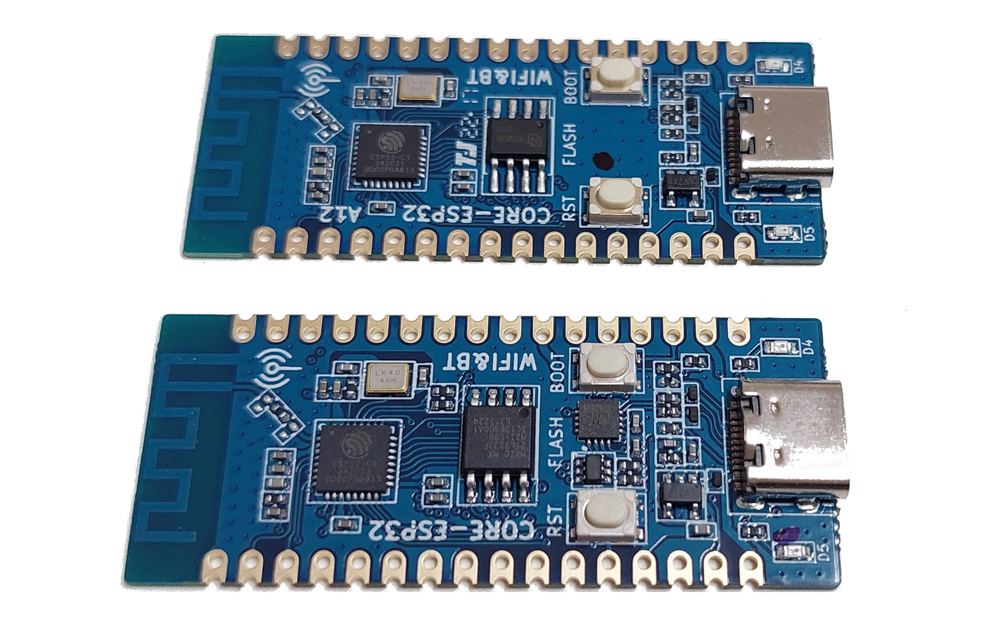
รูป: บอร์ด LUATOS ESP32C3-CORE - Top View
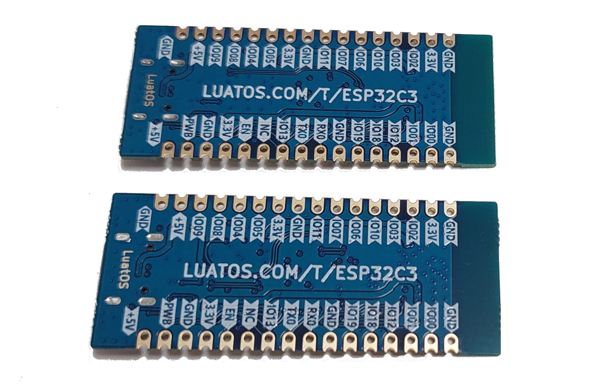
รูป: บอร์ด LUATOS ESP32C3-CORE - Bottom View
ข้อมูลเกี่ยวกับบอร์ด LUATOS ESP32C3-CORE
- ใช้ชิป ESP32-C3 และใช้ชิป SPI Flash (4MB) แยกกัน
- มี 40MHz Crystal Oscillator
- มีปุ่มกด CHIP_EN / RST (Reset) และ BOOT/GPIO-9
- มีวงจร LED (active-high) อยู่บนบอร์ด 2 ชุด (D4 และ D5) ต่อกับขา GPIO-12 และ GPIO-13 ตามลำดับ
- ใช้ไอซี ME6212C33M5G (LDO Voltage Regulator, 3.3V / 350mA max.) แปลงแรงดันไฟฟ้า VUSB (5V) ให้เป็น 3.3V และมีขา PWB สำหรับ Shutdown / Enable
- มีคอนเนกเตอร์ USB Type-C สำหรับเชื่อมต่อกับคอมพิวเตอร์ของผู้ใช้
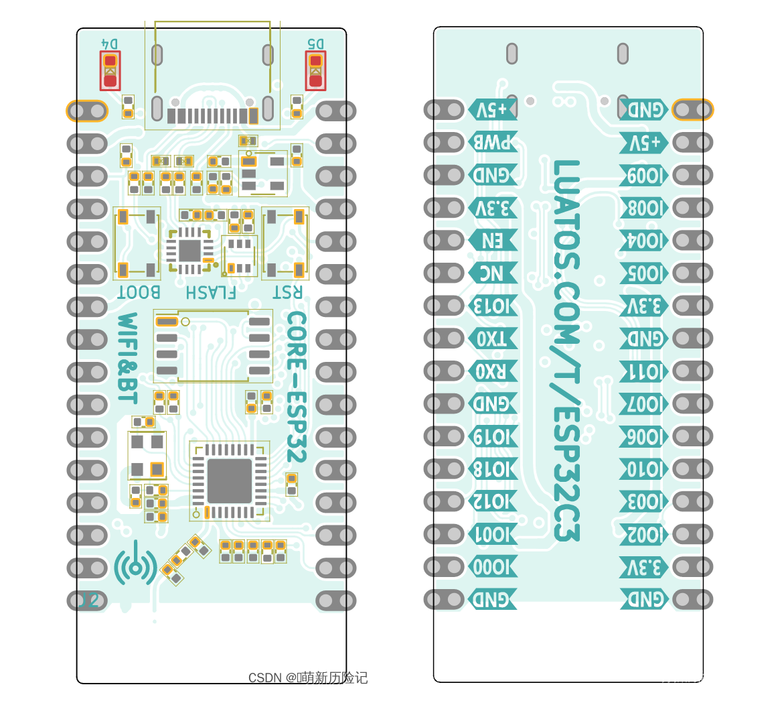
รูป: บอร์ด LUATOS ESP32C3-CORE (with CH340) - Board Layout
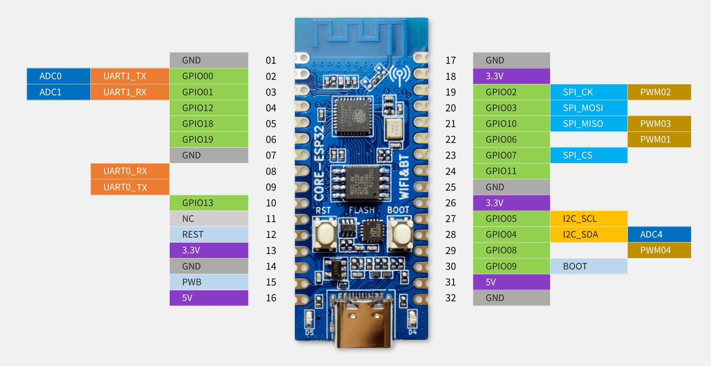
รูป: ผังแสดงตำแหน่งขาของบอร์ด (Board Pinout)
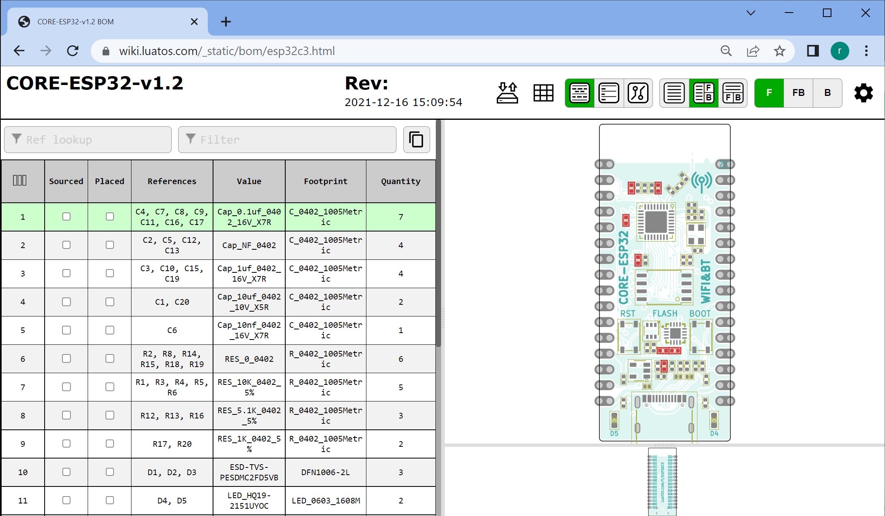
รูป: รายการอุปกรณ์ของบอร์ด (Interactive BOM)
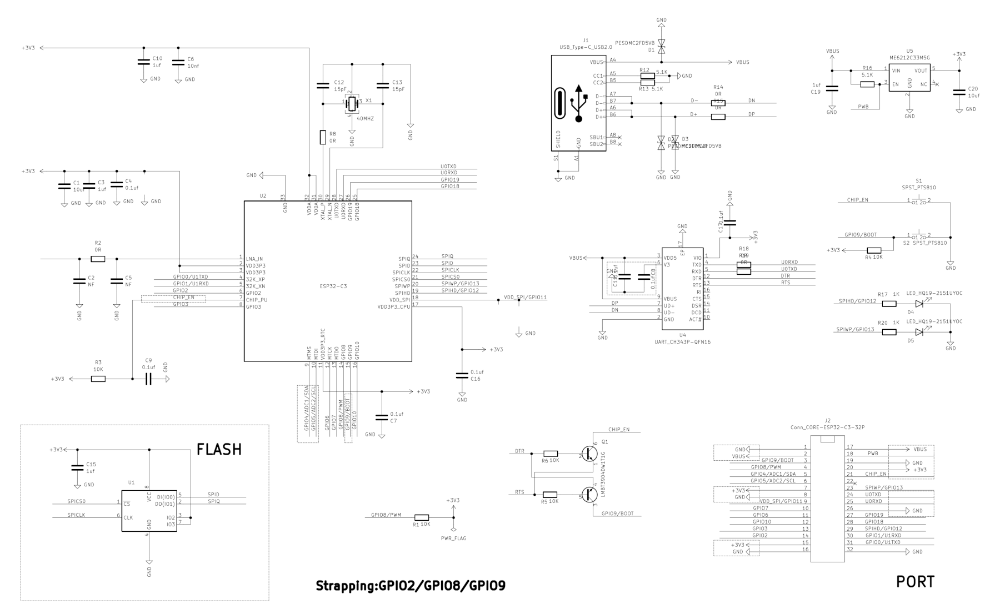
รูป: ผังวงจรของบอร์ด (View Schematic)
{kind=link}
▷ ตัวเลือกสำหรับการเขียนโปรแกรม#
บอร์ดนี้ เช่นเดียวกับบอร์ดอื่นที่ใช้ชิป ESP32-C3 สามารถเขียนโปรแกรมได้ โดยใช้ภาษาคอมพิวเตอร์ที่แตกต่างกัน เช่น
- C/C++:
- Python:
- Rust
- Lua
LuatOS เป็นชื่อของซอฟต์แวร์ที่ทางบริษัท Hezhou ได้สร้างขึ้น เพื่อนำมาใช้ในการพัฒนาเฟิร์มแวร์ด้วยภาษา Lua v5.3 และใช้ ESP-IDFV4.4+ & FreeRTOS เป็นพื้นฐานในการทำงาน สามารถนำมาใช้ได้กับชิป ESP32-C3 และ ESP32-S2 ของบริษัท Espressif
▷ ตัวอย่างโค้ดสำหรับ Arduino#
ในการเขียนโปรแกรมด้วย Arduino IDE ให้ติดตั้ง Arduino-ESP32 Core
โดยจะต้องติดตั้งไฟล์ package_esp32_index.json (เป็น Stable Version ตาม URL ต่อไปนี้)
ใน Arduino Board Managers
URL: https://raw.githubusercontent.com/espressif/arduino-esp32/gh-pages/package_esp32_index.json
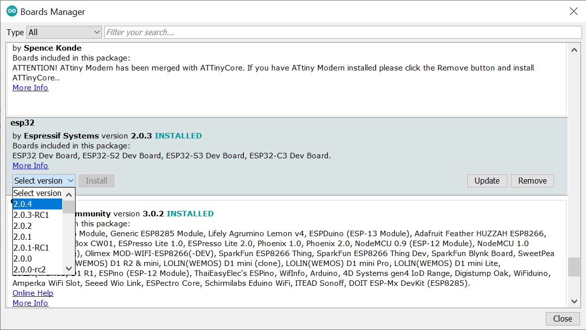
รูป: ตัวอย่างการติดตั้งหรืออัปเดต Arduino-ESP32 Core สำหรับ Arduino IDE
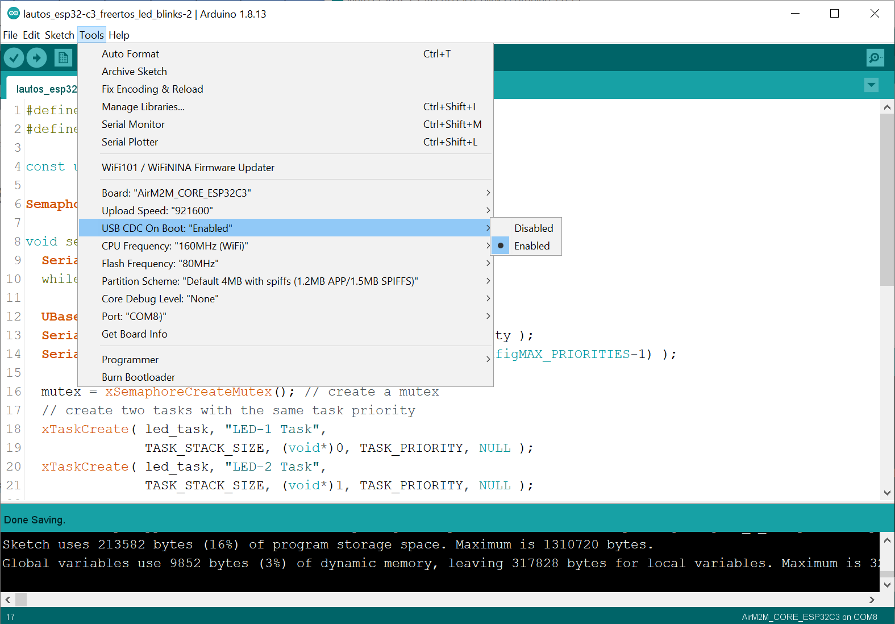
รูป: ตัวอย่างการเลือกบอร์ด "AirM2M_CORE_ESP32C3" และตั้งค่าใข้งานสำหรับ Arduino IDE
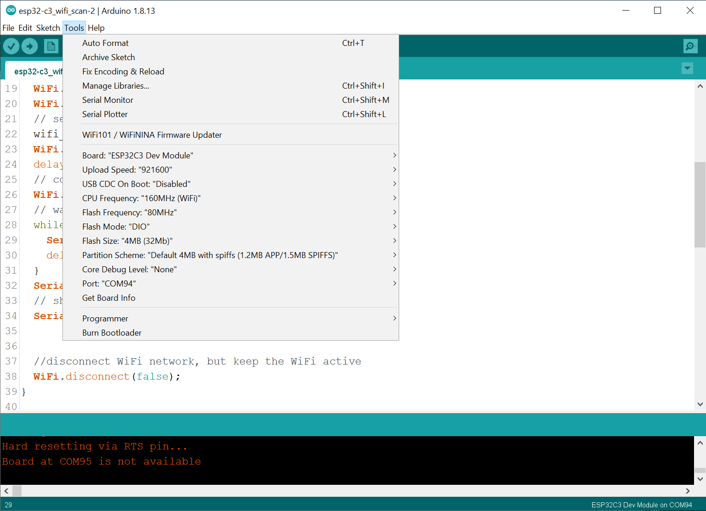
รูป: ตัวอย่างการเลือกบอร์ดเป็น "ESP32C3 Dev Module"
ข้อสังเกต: ถ้าใช้บอร์ด ESP32-C3 ที่ไม่มีชิป USB-to-Serial IC จะต้องเลือกใช้ USB CDC on Boot เพื่อใช้ในการอัปโหลดโปรแกรมและสื่อสารข้อมูลกับคอมพิวเตอร์ของผู้ใช้
โค้ดตัวอย่างที่ 1 สาธิตการเขียนโค้ดโดยใช้คำสั่งของ Arduino API และ FreeRTOS for ESP32 เพื่อเขียนโค้ดแบบมัลติทาสก์ (Multi-Tasking) และทำให้ LED ทั้งสองดวงบนบอร์ดกระพริบ (มีสถานะติด-ดับ) สลับกัน
#define TASK_STACK_SIZE (2048) // bytes
#define TASK_PRIORITY (2)
const uint32_t LED_PINS[] = {12, 13}; // use onboard LEDs
SemaphoreHandle_t mutex;
void setup() {
Serial.begin(115200);
while (!Serial){ delay(10); }
UBaseType_t priority = uxTaskPriorityGet(NULL);
Serial.printf( "The priority of main task: %lu\n", priority );
Serial.printf( "FreeRTOS-ESP32 max priority: %lu\n", (configMAX_PRIORITIES-1) );
mutex = xSemaphoreCreateMutex(); // create a mutex
// create two tasks with the same task priority
xTaskCreate( led_task, "LED-1 Task",
TASK_STACK_SIZE, (void*)0, TASK_PRIORITY, NULL );
xTaskCreate( led_task, "LED-2 Task",
TASK_STACK_SIZE, (void*)1, TASK_PRIORITY, NULL );
}
void loop() {
yield();
}
void led_task( void * pvParameters ) {
uint32_t id = (uint32_t)pvParameters;
uint32_t pin = LED_PINS[id];
pinMode( pin, OUTPUT );
if (id == 0) {
vTaskDelay( 500/portTICK_PERIOD_MS );
}
while(1) {
xSemaphoreTake( mutex, portMAX_DELAY ); // acquire the mutex lock
digitalWrite( pin, HIGH ); // turn the LED on
Serial.printf( "LED-%lu task @ %lu msec\n", id, millis() );
vTaskDelay( 500/portTICK_PERIOD_MS );
digitalWrite( pin, LOW ); // turn the LED off
xSemaphoreGive( mutex ); // release the mutex lock
taskYIELD();
}
}
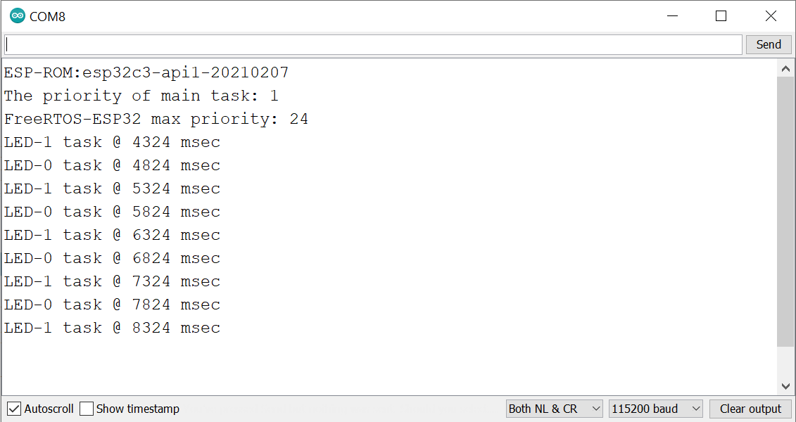
รูป: ตัวอย่างข้อความที่เป็นเอาต์พุตและได้รับใน Arduino Serial Monitor
โค้ดตัวอย่างที่ 2 สาธิตการเขียนโค้ดสาธิตการตรวจสอบเครือข่ายไร้สายในบริเวณโดยรอบ (WiFi Scan)
#include <WiFi.h>
#define WIFI_SSID "xxxxxxxxxx"
#define WIFI_PASSWD "xxxxxxxxxx"
#include <map>
#include <iterator>
using namespace std;
std::map<String, int> scan_results;
std::map<String, int>::iterator iter;
void setup() {
Serial.begin(115200);
while (!Serial){ delay(10); }
Serial.println( "ESP32-C3" );
Serial.flush();
// use WiFi STA (station mode)
WiFi.mode( WIFI_STA );
WiFi.disconnect();
// set WiFi Tx power (see: WiFi/WiFiGeneric.h)
wifi_power_t tx_power = WIFI_POWER_19_5dBm;
WiFi.setTxPower( tx_power );
delay(10);
// connect to Wi-Fi AP
WiFi.begin( WIFI_SSID, WIFI_PASSWD );
// wait until Wi-Fi is connected.
while ( WiFi.status() != WL_CONNECTED ) {
Serial.print( "." );
delay(100);
}
Serial.println( "" );
// show the IP address assigned by DHCP
Serial.printf( "IP address: %s\n",
WiFi.localIP().toString().c_str() );
//disconnect WiFi network, but keep the WiFi active
WiFi.disconnect(false);
}
void wifi_scan() {
Serial.print( "WiFi scan (synchronous mode) started..." );
int n = WiFi.scanNetworks(); // number of networks found
Serial.println( " done" );
if ( n==0 ) {
Serial.println( "No WiFi networks found..." );
} else {
Serial.printf( "WiFi networks found: %d\n", n );
for ( int i=0; i < n; ++i ) {
// keep only BSSID and RSSI for each network found
String bssid_str = WiFi.BSSIDstr(i);
int rssi_value = WiFi.RSSI(i);
iter = scan_results.find( bssid_str );
if (iter == scan_results.end()) {
scan_results.insert( { bssid_str, rssi_value } ); // insert
} else {
iter->second = rssi_value; // update
}
}
}
Serial.println( "" );
for ( iter = scan_results.begin(); iter != scan_results.end(); ++iter ) {
String mac_str = iter->first;
int rssi_value = iter->second;
// replace the last six hex digits with "xx"
mac_str = mac_str.substring( 0, mac_str.length()-8 );
mac_str += "xx:xx:xx";
Serial.printf( "%s %d\n", mac_str.c_str(), rssi_value );
}
Serial.printf( "Free heap: %lu bytes\n\n", ESP.getFreeHeap() );
Serial.flush();
}
void loop() {
wifi_scan();
delay( 2000 );
}
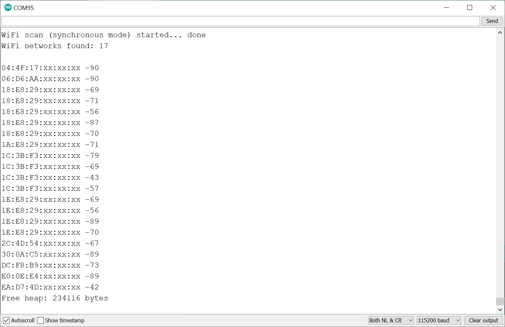
รูป: ตัวอย่างข้อความที่เป็นเอาต์พุตสำหรับ WiFi Scan
▷ ตัวอย่างการใช้งาน LuatOS-ESP32#
LuatOS รองรับการเขียนโค้ดด้วยภาษา Lua v5.3
และสามารถนำมาใช้ได้กับบอร์ดไมโครคอนโทรลเลอร์หลายแบบ
(เช่น Air101 / Air103 / W806) ซึ่งรวมถึงบอร์ด CORE-ESP32C3
ผู้ใช้สามารถเขียนโปรแกรมโดยใช้ VS Code IDE พร้อมกับติดตั้ง VS Code Extension
ที่มีชื่อว่า LuatIDE แต่มีเมนูคำสั่งและข้อความเป็นภาษาจีน
ดังนั้นจึงยังไม่แนะนำให้ใช้งาน หากสนใจตัวอย่างการเขียนโค้ด ก็สามารถดูได้จาก
https://github.com/openLuat/LuatOS/tree/master/demo
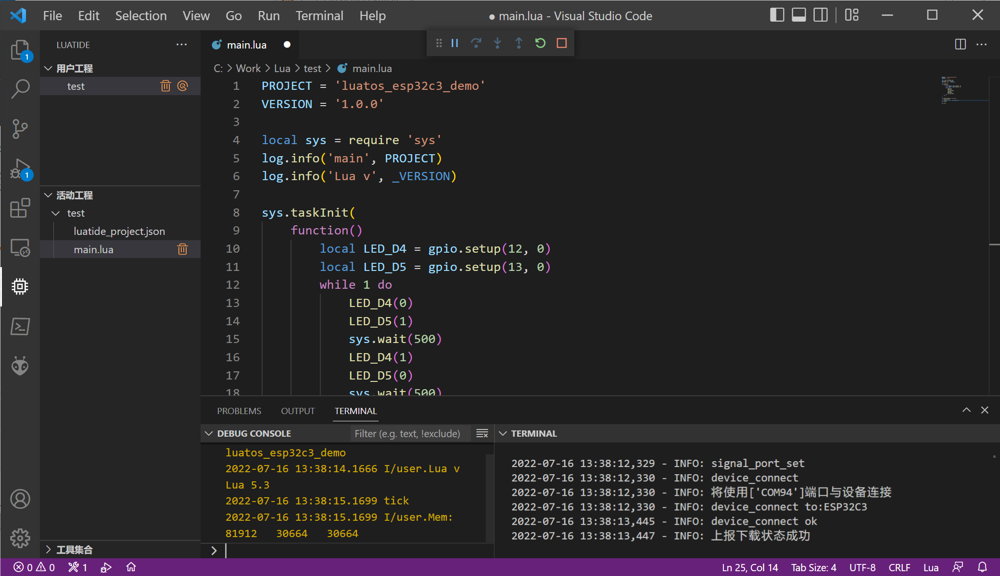
รูป: การทดลองใช้งาน VS Code IDE + LuatOS สำหรับบอร์ด CORE-ESP32C3 ที่มีชิป CH340C USB-to-Serial และใช้เฟิร์มแวร์ที่มีชื่อว่า LuatOS-SoC_V0003_ESP32C3_SSL.soc
▷ กล่าวสรุป#
บอร์ด AirM2M / LUATOS CORE-ESP32C3 ก็เป็นอีกหนึ่งตัวเลือกสำหรับผู้ที่สนใจและต้องการลองใช้งานชิป Espressif ESP32-C3 และมีราคาค่อนข้างต่ำกว่าบอร์ดที่เป็นตัวเลือกอื่น
This work is licensed under a Creative Commons Attribution-ShareAlike 4.0 International License.
Created: 2022-07-15 | Last Updated: 2022-07-16